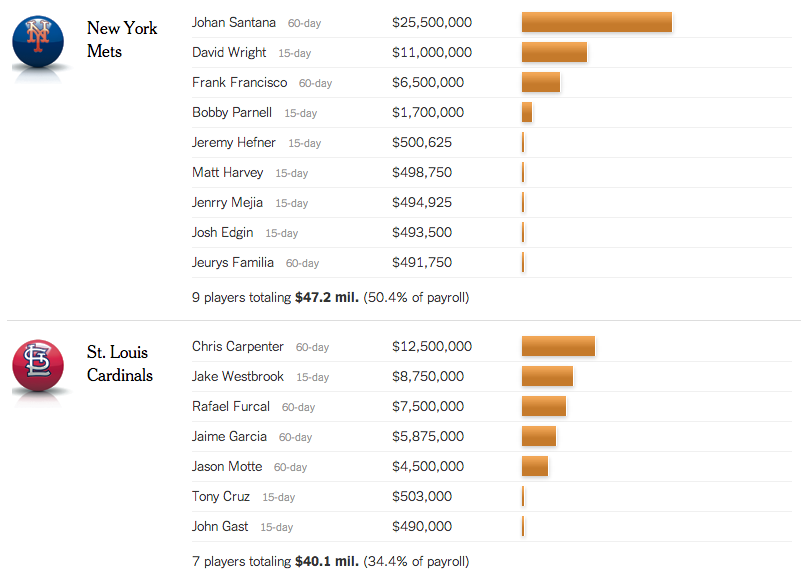
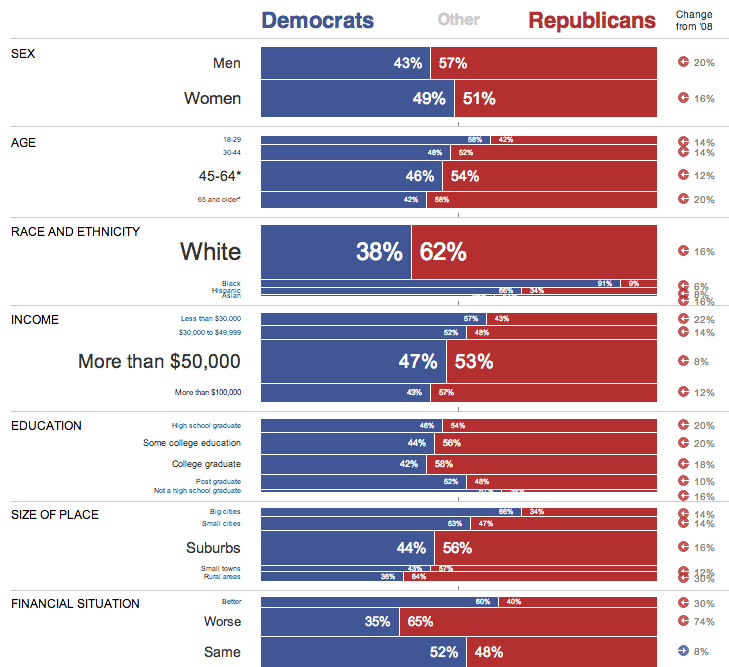
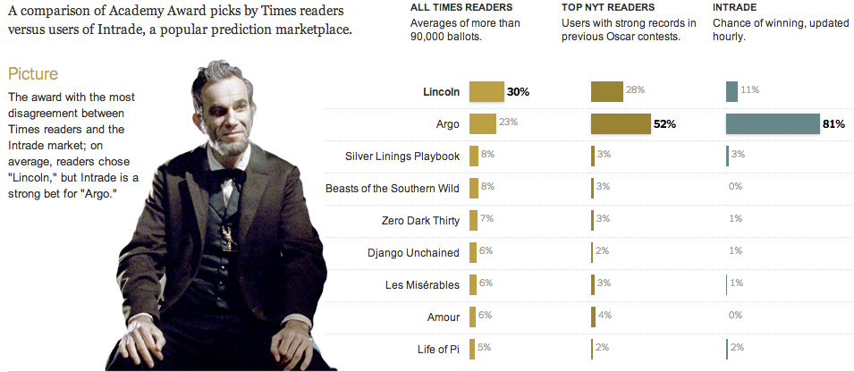
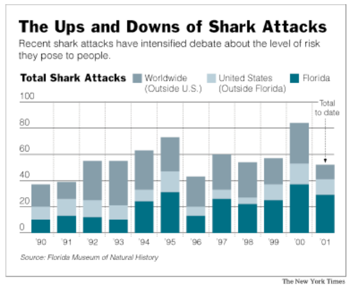
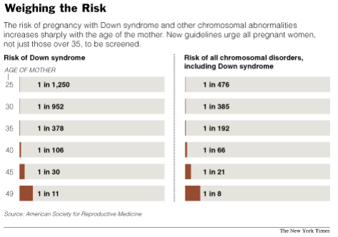
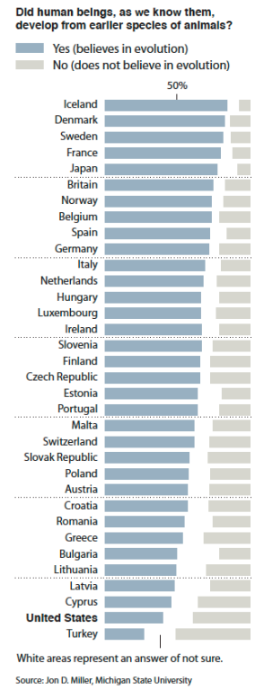
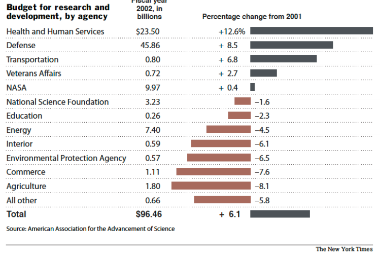

Bar charts
The bar chart is the workhorse of data visualization and often the best way to visualize data. This leads many chart purists and haters to tweet that your visualization "should have been a bar chart." From the Godfather: ”There's a strand of the data viz world that argues that everything could be a bar chart. That's possibly true but also possibly a world without joy.“ -Harvard Business Review
Bar charts are good for:
- Being a good default when you give up on other forms/a workhorse
- Comparing a few items
- Revealing patterns in what are essentially tables
Common mistakes with bar charts:
- Forgetting to zero-baseline
- Putting in a meaningless order
- Revealing patterns in what are essentially tables
In the wild:
- Money on the Bench
- Exit Polls
- Oscar favorites
- 
- 
- 
- 

More examples of bar charts
This could be a wiki we update all year, possibly with comments.